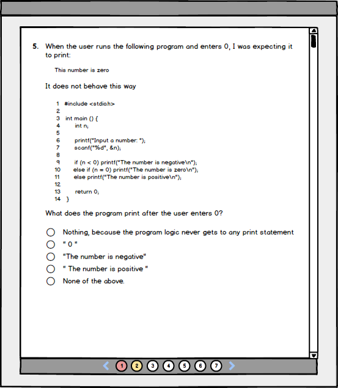
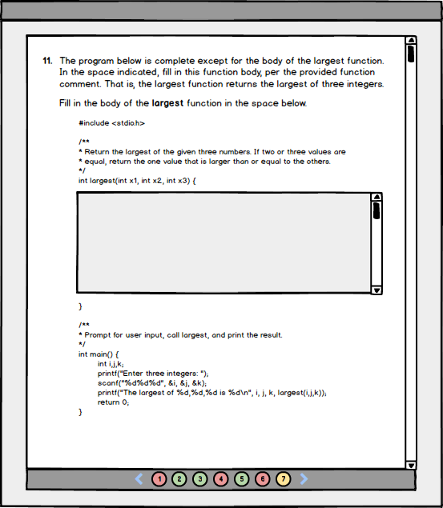

The scenario in this section illustrates the different ways a user can navigate between pages of a test. This scenario continues where the previous scenario left off.
At the bottom of the screen is a collection of buttons labelled with numbers, with arrows to the left and right. These items are used to navigate between pages of the test view.
The user clicks on the right-facing arrow. The system responds by displaying the next page of test questions.

Figure 0: The next page of the test view, navigated to by the user.
Each of the numbered buttons at the bottom of the screen links to a different page of the test. The buttons are also color-coded, to signify the user's progress through the test.
The '2' button is colored yellow, to signify that it is the currently active page of the test.
The '1' button is colored red, to signify that the page it links to has unanswered questions.
The other buttons are colored white, to signify that linked pages have yet to be visited.
A green color (not pictured) indicates that all questions on the linked page have been responded to.
The user continues to navigate between pages by clicking on both the buttons and the two arrows, answering questions until they reach the last page of the test.

Figure 1: The final page of the example test view.
{kind=link}